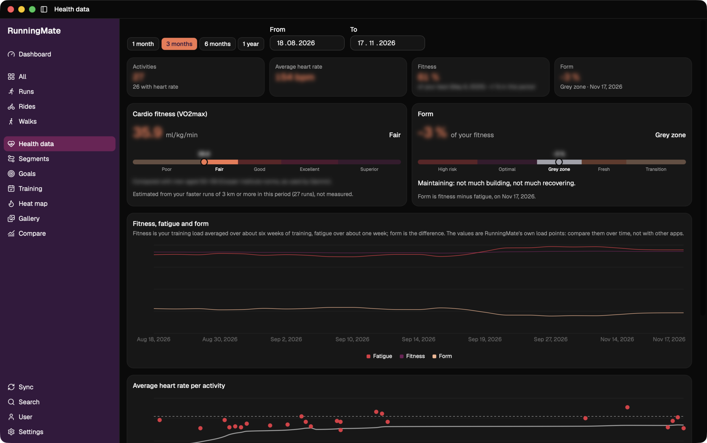

Health Data

The Health data page shows how your fitness, form and heart rate develop over a period, across all your activities. Open it from the sidebar or with ⇧⌘H, or click Fitness or Form on the dashboard. How the values are calculated is explained in Fitness and form.
Period
At the top, pick 1 month, 3 months, 6 months or 1 year (up to today), or set your own From and To dates. The page opens with the last 3 months. While a date is missing or From is after To, the page keeps showing the last valid period, dimmed.
Key numbers
Four cards for the period:
- Activities: the number of activities, and how many of them have heart-rate data.
- Average heart rate: the mean of the activities' average heart rates.
- Fitness: your fitness at the end of the period as a share of the highest fitness you ever reached up to then (of your best, with its date), and how much it changed during the period.
- Form: your form at the end of the period as a share of your fitness, with its zone and date.
Fitness and form are shown as percentages because the load points behind them have no unit of their own: compare them over time, not with other apps.
Cardio fitness (VO2max)
An estimate of your VO2max in ml/kg/min, from your faster runs of 3 km or more in the period; it needs at least 3 such runs. With fewer, the value from your user settings is shown, if you entered one.
With your birthday and sex in the user settings, the value is rated Poor, Fair, Good, Excellent or Superior against people of your age group and sex (Cooper Institute norms, as used by Garmin), and a coloured scale shows where you are: the darker, the fitter.
Form
Your form as a share of your fitness, on a scale of five zones:
| Zone | Form | Meaning |
|---|---|---|
| High risk | below −30 % | Fatigue is far above your fitness; too much of this risks overtraining. |
| Optimal | −30 to −10 % | A productive training load: your fitness is building. |
| Grey zone | −10 to 5 % | Maintaining: not much building, not much recovering. |
| Fresh | 5 to 20 % | Rested and fit: a good time for a race or a test. |
| Transition | above 20 % | Very rested: without training your fitness starts to drop. |
Fitness, fatigue and form
A line chart of the three values for every day of the period. Fitness is your training load averaged over about six weeks, fatigue over about one week, and form is the difference. Hover the chart to read the values of a day.
Average heart rate per activity
One dot per activity with heart-rate data, coloured by sport (runs, rides, walks), and a grey Trend line: the average over the last 30 activities. With heart-rate zones set, dashed lines mark Min, Ideal and Max at the upper limits of zones 1, 3 and 5.
Time in heart-rate zones
How much of the period's training time you spent in each heart-rate zone, as a bar with the share and the time, and the zone's heart-rate range. Set your zones in the user settings to see this.